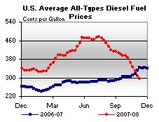

Released on November 13, 2008
(Next Release on November 19, 2008)
Trying to Get it Right
The year 2008 has been difficult for anyone trying to forecast short-term oil prices, and those of us with this responsibility at the U.S. Energy Information Administration (EIA) are no exception. Yesterday, EIA released its latest Short-Term Energy Outlook (STEO), which is a monthly look at the global oil market and U.S. energy markets through the next calendar year. Our revised forecast for crude oil prices next spring is down by almost $60 per barrel and our price outlook for gasoline and heating oil over that same period is down by more than $1.40 per gallon in some months! EIA has never before revised its short-term oil price forecast by such a large amount, and we feel it is important to explain the reasons behind such a dramatic change.
As the figure below indicates, there are multiple hard-to-predict factors that drive oil markets. On top of that, the significance of each factor can change quickly with little notice. To have the best shot at producing a good forecast of short-term oil prices, oil analysts need to accurately predict all of the factors below, appropriately weight each of the factors according to its influence on the market, and then hope that nothing unforeseen will occur. This is an extremely difficult task, which is why EIA tries to be very transparent with our assumptions and thinking behind our short-term oil price forecast. While many people just skip to the tables (especially the price tables) each month to get our latest view, we encourage users of the STEO to also review the text accompanying the report, which provides a brief explanation of the “story” behind our forecast.
By far, the dominant factor affecting prices in our latest forecast is the economy. The drop in the average price of West Texas Intermediate crude oil from $133 per barrel in July to less than $77 per barrel in October indicated the abrupt slowdown in the global economy. EIA does not make its own projections of global economic growth, and relies on independent macroeconomic forecasters for these projections. Given the broad uncertainty on the state of the global economy, these independent projections now vary widely on both the likely length and breadth of the slowdown. We now assume that world real gross domestic product (GDP) growth will slow from about 4 percent in 2006 and 2007 to about 2.5 percent this year and 1.8 percent in 2009. Last month’s STEO assumed world GDP would increase by 3.0 percent in 2008 and by 2.8 percent in 2009. Previous lows for world economic growth were 0.3 percent in 1982, 1.7 percent in 1993, and 1.5 percent in 2001. The year-over-year changes in U.S. real GDP in last month’s STEO were 1.8 percent growth in 2008 and 0.8 percent growth in 2009. We lowered the U.S. real GDP growth in the current STEO to 1.3 percent for 2008 and project it will decline by 1.4 percent in 2009.
Because petroleum consumption is strongly related to economic activity, the assumed change in the direction of economic growth has drastic effects on both projected petroleum consumption and price. The result of this downward revision is a much lower demand for oil than we had previously forecasted. We now expect global oil consumption in 2009 to stay relatively flat as opposed to the projection of about 800,000 barrels per day of growth in our October STEO. Combined with the revision to the 2008 projection, the projected level of oil consumption in 2009 is 1 million barrels per day below last month’s forecast.
While the economy appears to have an immediate effect on oil consumption, the effect on oil production in countries not belonging to the Organization of Petroleum Exporting Countries (OPEC) is much less direct in the short-term. Lower prices reduce investment in some of the more mature fields, increasing decline rates, but new projects that are very near completion are unlikely to be affected because most of the development costs have already been spent. Therefore, our 2009 forecast for oil production growth in non-OPEC countries, while lower than forecast in our October STEO, has changed much less than our forecast for global demand growth. The fact that we now have 2009 global demand growth significantly less than non-OPEC supply growth is the major reason we have a much lower oil price forecast.
With the expectation for global oil consumption dramatically reduced and with little change in the non-OPEC supply forecast, OPEC lowered their production targets effective this month. EIA’s analysis of this cut is that compliance will be greater than seen historically, but not enough to do much more than prevent prices from falling significantly further. As noted in last week’s This Week In Petroleum, we assume that Saudi Arabia, the OPEC member with the ability and willingness to change production levels the most, reduces production in the first quarter of 2009 to levels consistent with production in the first part of 2007. This would represent a reduction of nearly 1 million bbl/d from Saudi Arabia’s estimated peak monthly production level in the third quarter of 2008. Our analysis is that Saudi Arabia, and to a lesser extent, some other OPEC countries, will be willing to comply with production targets a little more closely than they have in the past because of the steep drop in oil prices seen since July.
We understand EIA’s responsibility to provide the best possible assessment of energy markets and to make sure that the assumptions going into our forecasts are as transparent as possible. Transparent assumptions make it easier for our customers to understand our forecast and adjust it accordingly if they disagree. While it is unprecedented for us to make such a radical change in our forecast from one month to the next, we thought it was especially important for our readers to understand the extraordinary changes in our economic assumptions and the analysis behind the changes.
Residential Heating Fuel Prices Still Falling
Residential heating oil prices fell for the fifth straight week since the start of the heating season during the period ending November 10, 2008. The average residential heating oil price decreased 5.4 cents last week to reach 293.3 cents per gallon, which was a drop of 27.3 cents from this time last year. Wholesale heating oil prices fell by a similar 5.6 cents, reaching 209.4 cents per gallon, a decrease of 58.4 cents compared to the same period last year.
The average residential propane price dropped 3.5 cents to end at 246.5 cents per gallon. This was an increase of 5.3 cents over the 241.2 cents per gallon average for this same time last year. Wholesale propane prices fell back below the dollar mark with a decrease of 13.9 cents per gallon, from 106.8 cents to 92.9 cents per gallon. This was a decrease of 72.6 cents from the November 12, 2007 price of 165.5 cents per gallon.
U.S. Average Diesel Price Falls Below $3 a Gallon
The U.S. average price for regular gasoline tumbled another 17.6 cents to reach 222.4 cents per gallon. Over the past eight weeks, the U.S. average has plummeted 161.1 cents and has now dropped 189 cents from the all-time high set on July 7. As a result, the price is now 88.7 cents below the price a year ago. The average price on the East Coast slumped 17.7 cents to 227.2 cents per gallon. Prices sank below $2.10 in both the Midwest and Gulf Coast regions. In the Midwest, the price slid 17.7 cents to 206 cents a gallon, the lowest average price among the regions. On the Gulf Coast, the price fell 13.2 cents to 209.6 cents per gallon. The price in the Rocky Mountains dropped the most of any region, plunging 22.5 cents to 225.7 cents per gallon. The price on the West Coast fell for the twentieth consecutive week, dropping 20.6 cents to reach 253.4 cents per gallon. The price in California fell 22.8 cents, settling at 255.5 cents per gallon.
The U.S. average price for diesel fuel fell below $3 a gallon for the first time since September 17 of last year, decreasing 14.4 cents to 294.4 cents per gallon. Prices continued to fall across the Nation and dropped below the $3 mark in all regions except the East Coast. Although the price in the Lower Atlantic portion of the East Coast dropped to 298 cents per gallon, the price in the Central Atlantic and New England portions of the region remained above 320 cents per gallon, so that the average for the region as a whole, after falling 15.9 cents, still remained at 306 cents per gallon. Slipping 13 cents to 288.8 cents per gallon, the price in the Midwest remained the lowest of any region. The average price in the Gulf Coast dropped 13.8 cents to 289.5 cents per gallon. The price in the Rocky Mountains plunged the most of any region, tumbling 19.3 cents to 296.4 cents per gallon. On the West Coast, the price fell 14.2 cents to 291 cents per gallon. In California, the average price shrank by 14.4 cents to 291.3 cents per gallon.
Propane Inventories Edge Lower
Propane inventories edged slightly lower last week with a 0.1 million barrel drop that put the Nation’s primary supply of propane at an estimated 60.3 million barrels as of November 7, 2008. The modest stockdraw contributed to maintain total inventories on a path below the lower boundary of the average range for this time of year. Weekly declines were reported in the East Coast and Midwest with respective drops of 0.1 million barrels and 0.5 million barrels. Elsewhere, inventories were unchanged in the combined Rocky Mountain/West Coast region, while, in the Gulf Coast, inventories were up sharply by 0.5 million barrels. Propylene non-fuel use inventories rose by 0.3 million barrels last week to account for a larger 5.5 percent share of total propane/propylene inventories, compared with the prior week’s 5.0 percent share.
Text from the previous editions of “This Week In Petroleum” is now accessible through a link at the top right-hand corner of this page.
| Retail Prices (Cents Per Gallon) | |||||||
|  | |||||||
| Retail Data | Changes From | Retail Data | Changes From | ||||
| 11/10/08 | Week | Year | 11/10/08 | Week | Year | ||
| Gasoline | 222.4 | Heating Oil | 293.3 | ||||
| Diesel Fuel | 294.4 | Propane | 246.5 | ||||
| Spot Prices (Cents Per Gallon*) | |||||||||||||||||||||||||||||||||||
|
|||||||||||||||||||||||||||||||||||
| *Note: Crude Oil WTI Price in Dollars per Barrel. | |||||||||||||||||||||||||||||||||||
| Stocks (Million Barrels) | |||||||
 |
|||||||
| Stocks Data | Changes From | Stocks Data | Changes From | ||||
| 11/07/08 | Week | Year | 11/07/08 | Week | Year | ||
| Crude Oil | 311.9 | Distillate | 128.4 | ||||
| Gasoline | 198.1 | Propane | 60.276 | ||||